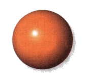
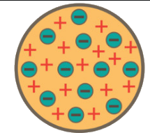
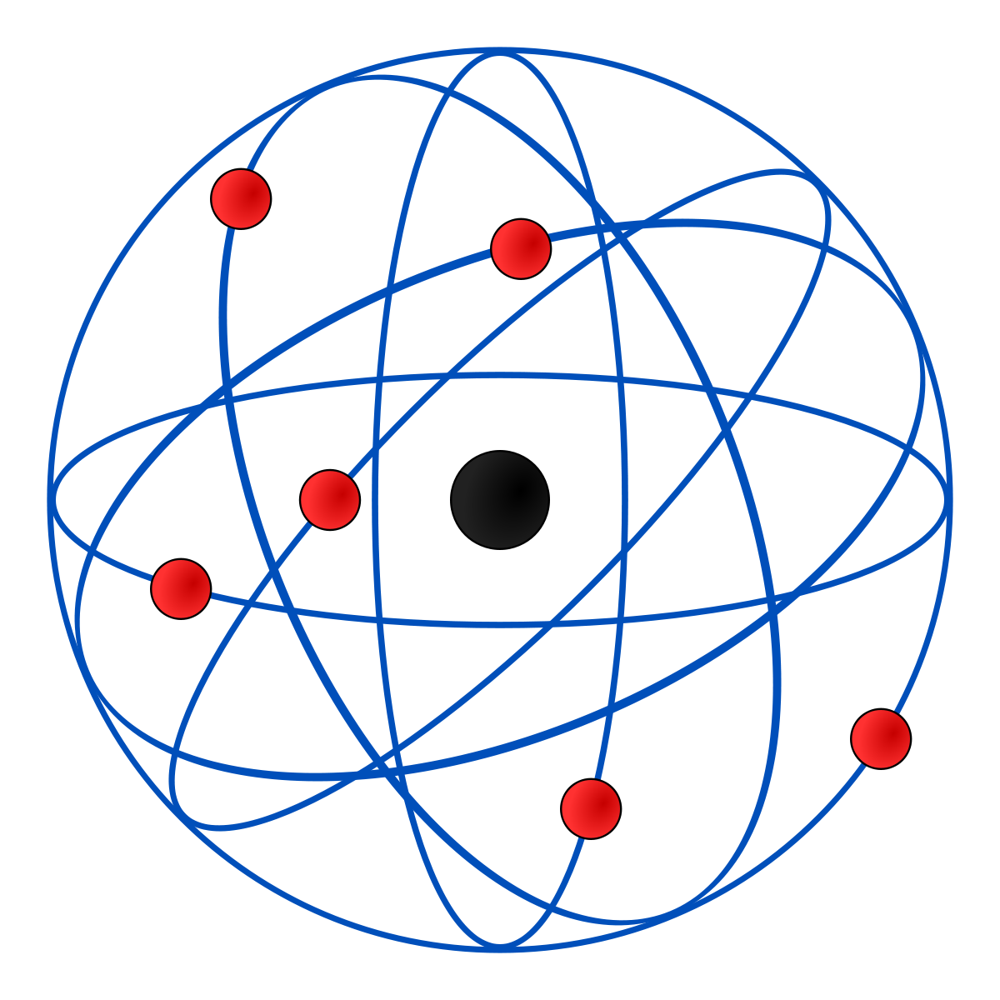
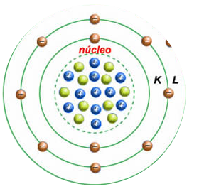

Átomos são muito pequenos para seram vistos até nos melhores micróscopios convencionais.
Isso sempre dificultou o estudo da estrutura, que deve ser feito por meio de evidências
indiretas e, às vezes, bastantes complexas.
Em Química, a ideia de modelo é muito importante. Modelo, de um modo bem simples,
consiste na maneira como imaginamos que é algo que não temos acesso direto.
De forma análoga, os químicos dispõem desde o início do século XIX, de evidências sobre a existência de átomos.
No entanto, à medida que novas evidências surgem, teorias e modelos têm, muitas vezes de ser aperfeiçoados ou substituídos por outros.

Modelo atomico de Dalton
Modelo proposto por volta de 1803 pelo quimico e físico inglês John Dalton.
Com os estudos e experiencias de Dalton, concluisse que toda a materia é formada
por partículas esféricas maciças e indivisíveis que não podem ser criadas nem destruídas, podendo comparar á uma bola de bilhar.

Modelo atomico de Thomson
Modelo proposto por volta de 1898 pelo físico inglês Joseph John Thomson.
Após ter diversas evidências experimentais, ele derrubou a teoria da indivisibilidade
do átomo proposta por John Dalton. Thomson, a partir de seu modelo, confirmou e provou
a existência de elétrons (partículas com carga elétrica negativa) no átomo.

Modelo atomico de Rutherford
No ano de 1911, o cientista neozeolandês Ernest Rutherford, atravez de diversas experiencias
o montou um modelo atomico apelidado de Sistema solar.
Ele descobriu a radiação do átomo, as orbitas circulares e o nucleo, embora não se conhecesse ainda
os neutrons, logo não se conhecia o real núcleo do átomo.

Modelo atomico de Bohr
Niels Bohr, no ano de 1923, trabalhou juntamente com Rutherford para ppreencher a lacuna que faltava
no modelo "sistema solar". Juntos eles descobriram os életrons e a organização dos életrons em suas órbitas.
O modelo que eles se desenvolveram foi comprovado cientificamente e é o mais aceito até hoje.